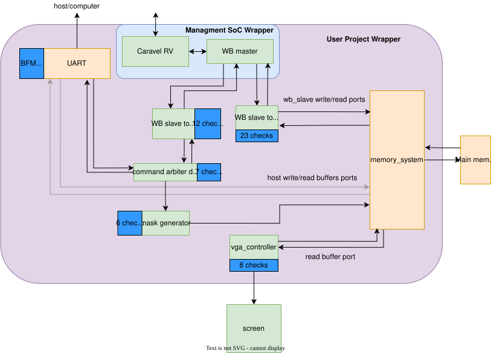

System Architecture
The Lacerta platform consists of four major components: the custom silicon implementation, the PCBA hardware, the firmware layer, and the interface design software. Together, these elements form a complete open-source system for creating, deploying, and operating customizable embedded graphical interfaces.
Custom Silicon (Caravel User Project)
The core of the Lacerta platform is a custom ASIC implemented in the SKY130 process and integrated within the Caravel user project area. This hardware subsystem implements the graphical interface engine responsible for interpreting interface configurations, managing graphical data, and generating the video output displayed on the screen.
The Lacerta ASIC is organized around a memory-centric architecture in which graphical instructions and interface data are stored in main memory and processed by several cooperating hardware blocks.
The ASIC includes the following main modules:
- UART configuration interface
- Embedded RISC-V control processor
- Wishbone master interface
- Display generation circuit
- VGA controller
- Interface configuration memory (main memory)
- Memory controller

Figure 5. Internal architecture of the Lacerta ASIC showing the interaction between the UART configuration interface, RISC-V control processor, display generation circuit, memory controller, and VGA controller used to render the graphical interface.
UART Configuration Interface
The UART interface provides a simple communication channel used to configure the graphical interface. Through this interface, instructions describing the interface layout and graphical element parameters can be transmitted to the system and stored in main memory.
This mechanism allows external tools or host systems to upload interface configurations directly to the Lacerta platform. In addition to UART-based configuration, the same process may also be performed internally by the embedded RISC-V processor.
Embedded RISC-V Processor
The Lacerta architecture includes a lightweight RISC-V processor that acts as a control host for the system. The processor is responsible for accessing the configuration memory, interpreting graphical instructions, and coordinating the operation of the display subsystem.
The RISC-V core reads interface instructions stored in main memory and generates commands that are sent through the Wishbone master interface to the display generation circuit. This allows the processor to update graphical elements, manage system states, and control the rendering behavior of the interface engine.
Display Generation Circuit
The display circuit is responsible for translating the graphical commands issued by the processor into visual data stored in memory. Based on the instructions received through the Wishbone interface, the display circuit writes the corresponding pixel or graphical data into the main memory.
This block effectively converts high-level graphical commands into the memory representation of the interface image. By using this approach, Lacerta separates graphical command processing from the actual video signal generation.
Main Memory (Interface Frame Storage)
The system includes a main memory block that stores the graphical representation of the interface being rendered. This memory holds the frame buffer or graphical data required to produce the display output.
Both the processor and the display circuit can write graphical data into this memory, while the VGA controller reads from it to generate the final display output.
Memory Controller
The memory controller manages access to the main memory and arbitrates between multiple request sources, including the RISC-V processor, the display generation circuit, and the VGA controller.
This controller ensures that memory transactions occur in an orderly and deterministic manner while preventing access conflicts between read and write operations.
VGA Controller
The VGA controller is responsible for generating the video signal that drives the display. It continuously reads graphical data from the main memory and converts it into VGA-compatible pixel streams.
The controller generates the required horizontal and vertical synchronization signals, along with the RGB data signals needed to display the interface on a VGA monitor. This hardware-based video generation enables Lacerta to produce real-time graphical output without requiring external graphics processors.
PCBA Hardware
The Lacerta platform also includes a custom printed circuit board assembly (PCBA) that supports the deployment and operation of the hardware system in a complete embedded environment.
A custom PCB will include:
- Caravel development board or packaged chip
- VGA connector
- sensor interfaces
- microcontroller interface (UART/SPI/I2C)
- power management circuitry
The Caravel development board or packaged chip provides the hardware platform on which the Lacerta ASIC can be tested and operated.
The VGA connector provides the physical video output interface used to display the generated graphical HMI on an external monitor.
This PCB connects sensors or microcontrollers that provide real-time data used to update the interface elements rendered by the Lacerta ASIC.
Firmware
The Lacerta platform includes a firmware layer that can run directly on the embedded RISC-V processor provided by the Caravel SoC. This firmware acts as the control layer responsible for managing the graphical interface and coordinating the interaction between system inputs and the Lacerta hardware rendering engine.
Firmware executed on the Caravel RISC-V processor is responsible for:
- receiving input data from sensors or external systems
- updating graphical elements in memory
- configuring interface parameters
- controlling the display generation circuit through the Wishbone bus
During operation, the RISC-V processor reads incoming data from communication interfaces and translates this information into graphical updates. The processor sends commands through the Wishbone master interface to the Lacerta display engine, which writes the corresponding graphical data into the system memory.
The VGA controller then reads the graphical data stored in memory and generates the video signal that produces the final image on the display.
In addition to running on the embedded processor, the Lacerta system can also interact with external microcontrollers. In this configuration, an external controller may collect sensor data or perform additional processing and then transmit the relevant information to the Caravel system using standard communication interfaces such as UART, SPI, or I2C.
This architecture allows Lacerta to operate in two modes:
- Standalone mode, where the Caravel RISC-V processor runs the firmware and directly manages the graphical interface.
- Co-processor mode, where an external microcontroller provides data or commands that are forwarded to the Lacerta display engine through the Caravel platform.
By leveraging the embedded RISC-V processor and the Wishbone interconnect, the firmware provides a flexible mechanism for controlling the graphical interface while maintaining compatibility with a wide range of embedded systems and sensor sources.
Interface Design Software
The fourth major component of the Lacerta architecture is the interface design software, which provides the user-facing environment for defining custom graphical interfaces.
A desktop graphical tool will allow users to create custom interfaces through a visual editor.
The software will export configuration files used by the hardware engine.
Through this visual editor, users can place and configure graphical elements such as buttons, bars, numeric indicators, and status displays. The tool allows the interface to be designed at a high level without requiring manual implementation of low-level graphics logic.

Figure 6. Graphical editor of the Lacerta Interface Design Software, where users can design custom embedded interfaces by arranging graphical components such as seven-segment displays, bars, and indicators.
Once the design is complete, the software generates a configuration file that describes the interface structure and parameters. This file is then loaded into the Lacerta hardware engine, enabling the ASIC to render the desired interface directly in hardware.
By combining these four components, Lacerta provides a complete and reproducible platform for configurable embedded HMIs, spanning interface creation, silicon implementation, runtime control, and physical system integration.